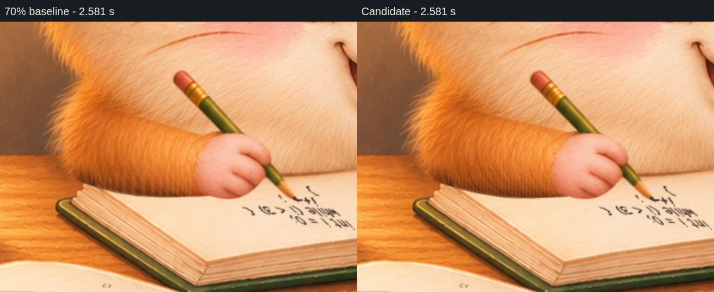
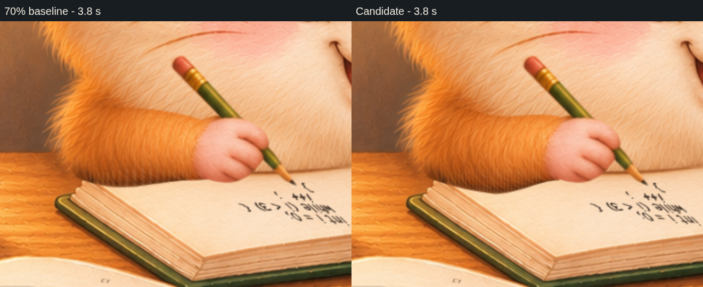
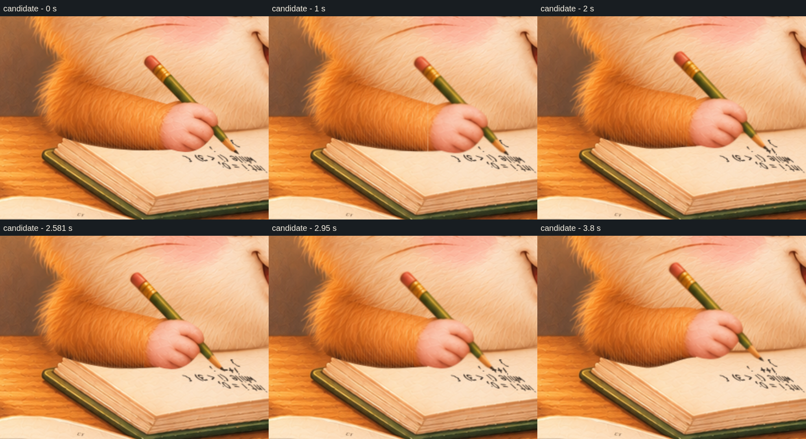

保守腕部动作：单个候选，未达到整体更自然
前臂横向不再压缩，但纹理滑接、细竖缝与抬笔处折接更明显。未接正式动画，不继续调参。
报告 · 指标 · 现有基准与画面核对
4.90秒同步动态对照 · 左70%基准 / 右唯一候选
单一对照视频内两侧逐帧同步；30fps，精确2.581/3.8秒局部见下方PNG。
独立完整预览
2.581秒 · 200%局部

3.8秒 · 200%局部

整段关键时刻采样（候选）

头部、眼神、书页、素材与书写轨迹保持；毛发路线仍停止。